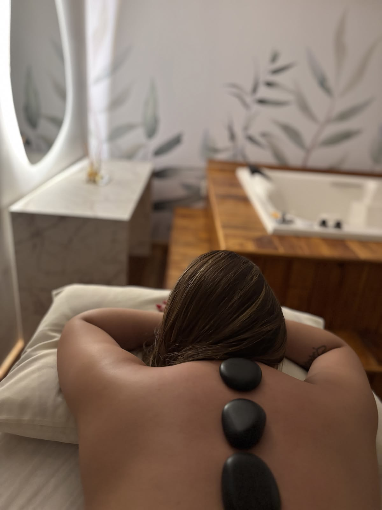
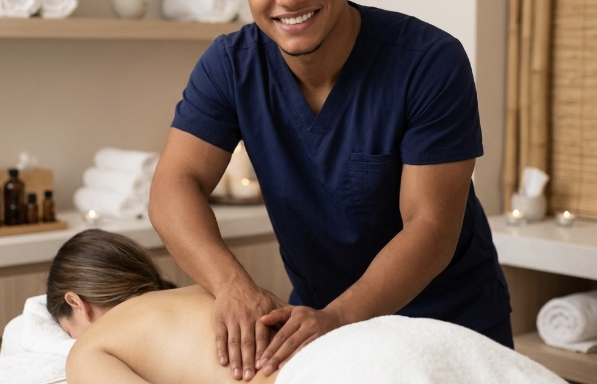
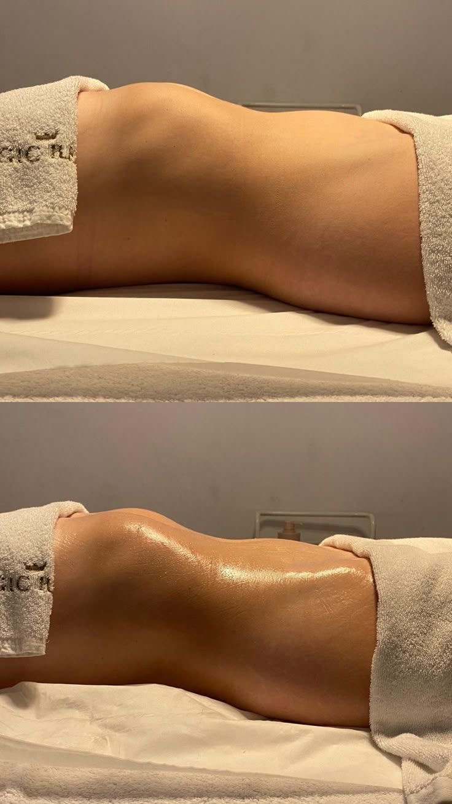
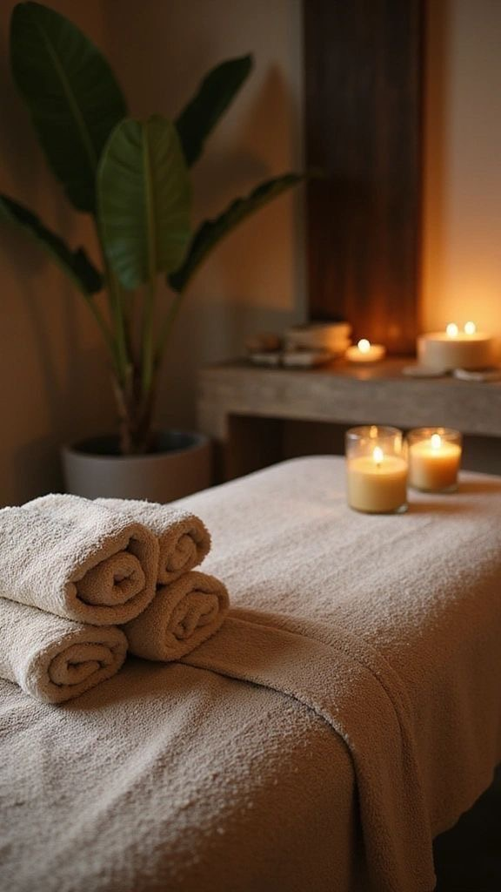
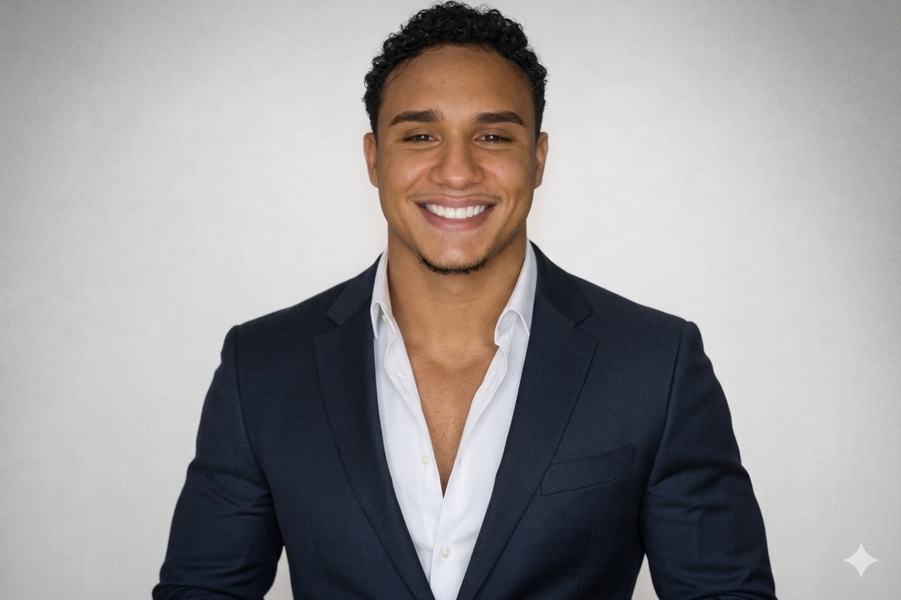

EXPERIÊNCIA COMPLETA

90 MINUTOS
Premium
Sessão prolongada e personalizada com atenção a pés, mãos, costas, nuca e outras áreas previamente alinhadas, com recursos selecionados conforme o atendimento.
R$ 150
Quero a PremiumAtendimento com hora marcada, no endereço que você escolher. Eu levo a maca, os materiais e preparo cada sessão para que você não precise sair de casa para cuidar de si.
Agendar pelo WhatsAppConhecer serviçosOpções pensadas para diferentes momentos, sempre com atendimento individualizado e hora marcada.

Sessão prolongada e personalizada com atenção a pés, mãos, costas, nuca e outras áreas previamente alinhadas, com recursos selecionados conforme o atendimento.

Massagem manual relaxante somente nas costas, sem pedras ou objetos. Indicada para desacelerar e aliviar tensões comuns da rotina.

Técnica manual com movimentos leves, lentos e ritmados, voltada à sensação de leveza corporal e ao estímulo do fluxo linfático.
Deslocamento: o valor é informado previamente conforme a localização, antes da confirmação.
Massagem miofascial para atletas e pessoas fisicamente ativas, com atendimento direcionado às necessidades do corpo após a rotina de treinos.
Uma sessão personalizada para quem pratica musculação, corrida, ciclismo, crossfit, dança ou outras atividades físicas.
A região e o objetivo da sessão são alinhados antes do atendimento, permitindo direcionar o trabalho conforme a rotina de atividade física.
A sessão não substitui avaliação ou tratamento médico ou fisioterapêutico quando necessário.
Cada recurso tem uma função e é utilizado conforme o serviço escolhido e o que for alinhado antes da sessão. Manta térmica e ventosaterapia também podem ser contratadas separadamente.

Aquecimento controlado para proporcionar calor e conforto quando esse recurso é indicado.
Serviço avulso.
Instrumentos usados em manobras específicas, permitindo variar a pressão e o formato do toque conforme o alinhamento.
Recursos que podem complementar determinadas técnicas, conforme a proposta da sessão.
Utilizadas na Premium quando adequadas, acrescentando calor e uma sensação diferente ao toque.
Recurso utilizado conforme indicação e alinhamento da sessão. Também disponível como serviço avulso.
Serviço avulso.
Os recursos não são usados automaticamente em todas as sessões. Bambus, instrumentos e pedras dependem do serviço e do alinhamento. Manta térmica e ventosaterapia possuem valor avulso.
Uma opção para quem quer organizar uma rotina de cuidados corporais em sessões programadas.
Os pacotes criam uma rotina de acompanhamento corporal. A abordagem e os recursos são explicados antes de cada atendimento.
Informação clara, atendimento individualizado e uma experiência pensada para acontecer com tranquilidade.
Você recebe o atendimento no endereço combinado, sem precisar organizar deslocamentos antes ou depois.
Eu levo a maca e os materiais necessários para o serviço escolhido e preparo o espaço.
Antes da sessão, explico o que será feito e alinhamos expectativas, preferências e conforto.

Eu criei a TocSuav para tornar a massoterapia mais acessível e conveniente para quem quer cuidar de si sem precisar sair de casa.
Vou até o endereço combinado levando minha própria maca e os materiais necessários. Cada atendimento começa com um alinhamento rápido para explicar o que será feito e entender o que você espera daquele momento.
Você escolhe o serviço e o endereço; eu cuido da preparação.
Você marca um endereço adequado e um horário. Eu chego com a maca e os materiais, preparo o espaço, explico a sessão e, depois de alinharmos tudo, iniciamos o atendimento.
Escolha o serviço, envie sua localização e consulte horários.
Vou ao local combinado em Belém com maca e materiais.
Explico o que será feito e ajustamos conforto e preferências.
Com tudo preparado, iniciamos a sessão escolhida.
Deslocamento: o valor é informado previamente conforme a localização.
As principais informações para decidir com tranquilidade.
Sim. A sessão acontece no endereço combinado em Belém. Eu levo a maca e os materiais necessários.
Chame pelo WhatsApp, informe o serviço e envie sua localização. Disponibilidade e deslocamento são alinhados antes da confirmação.
Não. A TocSuav leva a maca e os materiais. Você só precisa disponibilizar um espaço adequado.
Não. Cada recurso tem uma função e é utilizado conforme o serviço contratado e o que for alinhado.
Sim. Cada uma tem valor avulso de R$ 60 e também pode ser utilizada quando fizer sentido dentro de determinados atendimentos.
O valor é informado separadamente conforme a localização e combinado antes da confirmação.
Não. Resultados variam conforme características individuais e hábitos.
Me diga qual serviço despertou seu interesse e eu te explico os próximos passos.
Chamar no WhatsApp